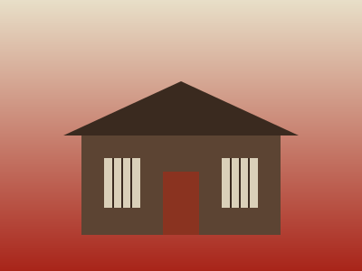
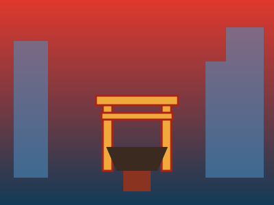
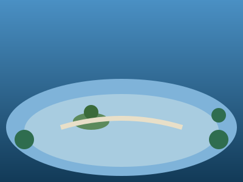
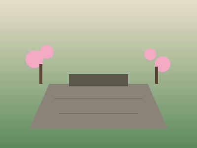
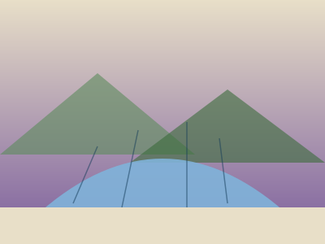
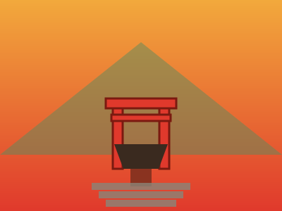

博多・天神・大濠・太宰府の4エリアから、定番の神社仏閣・公園・屋台街スポットを厳選して紹介します。
「博多祇園山笠」の舞台として知られる博多の総鎮守。巨大な飾り山笠が一年を通して展示され、博多っ子の心のよりどころ。
運河を中心に劇場・ホテル・ショップが集まる複合商業施設。噴水ショーやイルミネーションなど昼夜で違う表情が楽しめる。
那珂川沿いにずらりと灯る屋台の明かり。ラーメンや焼き鳥、もつ鍋を片手に地元客や旅行者と肩を並べる福岡名物の夜景色。

歴史明治期の博多織元家屋を復元した資料館。博多祇園山笠や博多弁など博多の歴史と文化をコンパクトに学べる。
南北約600mに150店以上が並ぶ地下街。石畳とガス灯風の照明でヨーロッパの街並みを再現した独特の雰囲気。

都会のパワースポット天神の繁華街のすぐそばに佇む古社。ビル街の中の静けさが際立ち、買い物の合間に立ち寄れる都会のパワースポット。
建物全体が階段状の森になった全国でも珍しい建築。屋上まで登れば天神・大濠エリアを見渡せる無料の展望スポット。

必見博多湾の入江を利用した日本有数の水景公園。池をぐるりと囲む約2kmの周回路は散歩やジョギングの人気コース。

歴史黒田長政が築いた福岡城の跡地に広がる公園。天守台からは市街を一望でき、春には約1000本の桜が咲き誇る。
高さ234m、海浜タワーとしては日本一の高さ。展望室からは博多湾と福岡市街を360度見渡せる絶景が広がる。
学問の神様・菅原道真公を祀る全国天満宮の総本宮。梅の名所としても知られ、受験合格祈願で年間1000万人が参拝する。

博物館「日本文化の形成をアジア史的観点から捉える」がテーマの国立博物館。太宰府天満宮から動く歩道で直結し、雨の日でも安心。
「九州唯一の枯山水」と称される石庭を持つ禅寺。太宰府天満宮のすぐそばにありながら静寂に包まれた穴場スポット。

縁結び縁結びの神社として人気の宝満山麓の古社。朱塗りの社殿と四季の自然が美しく、近年は若い参拝客で賑わう。
楽天トラベル・じゃらん・Skyscannerを横断比較して、お得な福岡行きチケットを探しましょう。